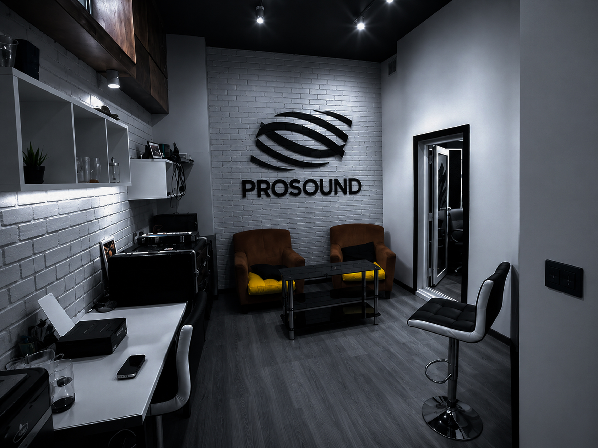

Контроль
- AMEK Big Console
- Genelec 8351 Monitoring
- Yamaha NS10M Monitoring
- Universal Audio Apollo X6 / X16 / 8 Interfaces
Наша студия — ваша площадка для воплощения музыкальных идей. Подберём микрофон под особенности голоса, запишем вокал, барабаны, хоры и ансамбли, а продуманная акустика поможет сохранить чистое и сбалансированное звучание.




Посмотрите, как мы записываем, сводим и собираем материал в студии.
Подбираем тракт под голос и задачу, а не заставляем артиста подстраиваться под технику. Нажмите на название прибора, чтобы узнать подробности.
Можно прийти на одну сессию или доверить команде весь цикл производства трека.
Студия и звукорежиссёр по часам для записи вокала и инструментов.
От 1 часаПодготовка сессии, запись дублей, компинг и базовая редактура.
С инженеромПродюсирование, аранжировка, запись, сведение и мастеринг.
Полный цикл«Не пришлось объяснять настроение трека десять раз — команда сразу поймала идею».
Артист / Запись вокала«Очень комфортная атмосфера. За одну сессию записали больше, чем планировали».
Артист / Продакшн«Получился релизный звук без ощущения бесконечных технических правок».
Менеджер / Сведение05 / Бронирование
Напиши удобную дату, время и задачу — подтвердим свободное окно и детали записи.